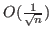

Spectral partitioning algorithms use eigenvectors and eigenvalues of the graph Laplacian to partition graphs. This talks aims to provide insight into the relationship between numerical accuracy and data mining quality in the context of spectral partitioning. When the spectral gap of the Laplacian is small, accurate approximations to the eigenvectors are hard to compute. We provide a bound on the error between an approximate eigenvector and the nearest element of an invariant subspace. This shows quantitatively that accurate approximations to linear combinations of eigenvectors are easier to compute when the spectral gap is small. On a model problem where linear combinations of Laplacian eigenvectors correctly partition the graph, the benefit of this shift in perspective is large. Using this model problem, known as the Ring of Cliques, and an analysis of sweep cut spectral partitioning, we derive necessary and sufficient eigenresidual tolerances for iterative solvers on this problem. This leads to a family of graphs where the necessary and sufficient eigenresidual tolerance is

. This analysis provides guidance to practitioners about choosing an eigenresidual tolerance for spectral partitioning applications on general graphs. This informs decisions regarding error tolerances and reduces iteration counts and computation time for practical applications such as community detection and data clustering.